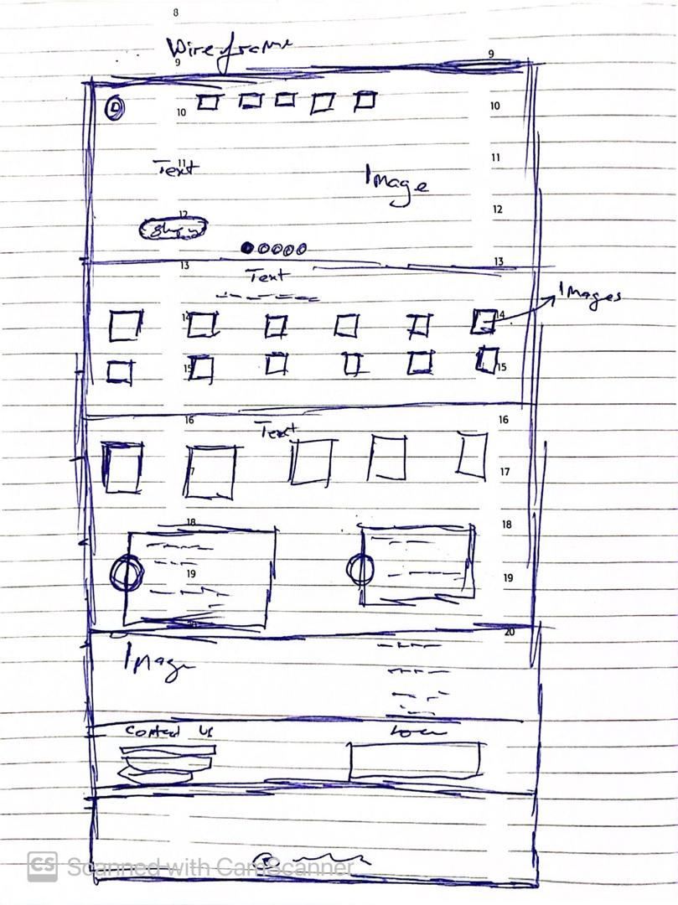
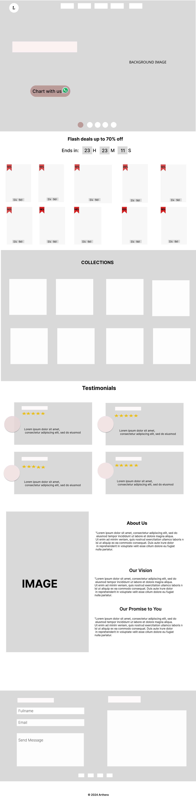

Case Study: Designing an Experimental Jewelry Website
Project Overview
This case study explores the design process behind creating an experimental jewelry website that pushes the boundaries of traditional e-commerce platforms. The goal was to craft a highly immersive, visually captivating, and intuitive user experience (UX) while showcasing high-end jewelry collections in a way that reflects innovation and craftsmanship while incorporating an experimental feature: WhatsApp as the primary method for placing orders. This was an exciting opportunity to establish the brand’s digital presence and build an entirely new user experience from the ground up.
The goal was to create a sophisticated, interactive website where customers could easily browse through jewelry collections and directly communicate with customer service representatives through WhatsApp to place orders or inquire about customization options.
Problem Definition
Aethera, as a new brand, lacked a functional, intuitive website that reflected its luxury image and could facilitate easy customer interaction. The challenges I aimed to address included:.
-
No Digital Presence: Aethera didn’t have an established online platform for customers to browse and purchase jewelry.
- Lack of Personalization: There was no personalized way for customers to interact with the brand online, which is critical for high-end products.
- Non-Traditional E-Commerce: Aethera wanted to innovate by using WhatsApp as the main order placement tool, stepping away from traditional cart-based checkouts. This added complexity to the design but promised a more direct, human-centric shopping experience.
Objectives
-
Design a Luxury Website from Scratch: Create a visually appealing website that aligns with Aethera’s high-end brand image while offering a seamless user experience.
- Integrate WhatsApp for Order Placement: Build a flow that allows customers to initiate product inquiries and place orders directly via WhatsApp.
- Provide Clear, Simple Navigation: Organize the site for ease of use, ensuring users could easily find products, explore customization options, and get assistance when needed.
- Ensure Mobile Compatibility: Given the popularity of mobile browsing, the website had to be fully responsive, particularly the WhatsApp feature, which would be crucial for mobile users.
- Create an Experimental, Engaging Flow: Instead of relying on the traditional shopping cart, the focus would be on a more conversational and personalized shopping experience.
Research & Discovery
Competitor Research
As I was building this site from the ground up, it was important to understand both the luxury jewelry market and best practices in e-commerce for high-end products. I analyzed websites from top jewelry brands as well as brands in adjacent industries, focusing on:
- Minimalist Design: Clean, sophisticated layouts that put the products front and center.
- High-Quality Imagery: Clear, detailed images that showcased the intricate craftsmanship of the jewelry.
- Personalized Customer Support: A few brands were experimenting with chatbots or live chats, but WhatsApp was less commonly used for transactions.
These insights helped shape the design by ensuring it was minimal yet elegant, visually showcasing the jewelry, while offering a seamless, personalized shopping experience via WhatsApp.
User Personas
Given that Aethera’s target market is affluent and values personal service, I created three key personas:
- Sophia: A 30-year-old professional looking for high-end jewelry. She values exclusivity and quality.
- James: A 45-year-old executive who wants to purchase a rare piece and appreciates luxury service.
- Emily: A 28-year-old fashion enthusiast seeking the perfect statement piece and prefers quick, direct communication via messaging apps.
These personas guided my design decisions and helped ensure the website met the needs of Aethera’s target audience.
Design Concept
The first step was designing wireframes for the website, focusing on the key pages and features needed for a luxury brand. The goal was to keep the design clean, simple, and elegant, with intuitive navigation and easy access to WhatsApp.
Topography
- Color Palette: Gold, silver, black, and white tones to convey luxury, with occasional pops of color for accent pieces.
- Typography: Elegant serif fonts for headings, clean sans-serif for body text to ensure readability and sophistication.
- Textures & Visuals: Incorporate subtle textures, like marble, soft gradients, or shiny metals, to highlight the jewelry’s shine and craftsmanship.
Wireframing
I started with basic wireframes to define the layout and flow and a more detailed layout using figma


Homepage
- Large hero images showcasing Aethera’s signature jewelry pieces, with subtle animations to create an engaging, dynamic feel.
- A prominent “Chat with Us on WhatsApp” button, positioned around the center lever of the page for easy access.
- Simple, refined navigation—clear categories like "Home", "Shop", "Collections," "About Us" and "Contacts."
Product Pages
- High-quality images of jewelry, along with a “Chat with us” option that opened a WhatsApp chat.
- No traditional "Add to Cart" button; instead, users were encouraged to initiate a WhatsApp conversation to proceed with the purchase.
WhatsApp Integration
- Clicking the WhatsApp button opened a conversation window directly with Aethera’s team, where users could ask questions, get more information, or proceed to make a purchase.
- Automated greetings were set up to introduce customers to the process (e.g., “Hello, how can I help you find the perfect piece?”), creating a more personalized experience.
- Representatives could share additional product images, offer customized recommendations, and help finalize purchases directly within the chat.
Mock Up
I chose a minimalist, elegant design with a neutral color palette and serif typography to reflect the luxury and craftsmanship of the jewelry. The product images were central to the design, and the layout was clean to ensure the focus was on the jewelry pieces.
Mobile Design
- Ensured a responsive design where the WhatsApp button was always accessible on mobile. The chat interface was simple and mobile-friendly, allowing users to easily inquire or purchase from their phones.
- Humburger menu was used for easy accessibilty of the navigation menu
- The product pages were also mobile-optimized with swiping options to view multiple images and zoom-in features for finer details.
User Testing
After creating the wireframes and prototyping the design, I conducted basic usability testing using prototypes. I observed how users interacted with the website, focusing on:
- How easily they found the WhatsApp button.
- Their comfort level with initiating a conversation rather than using a traditional shopping cart.
- The clarity of product descriptions and customization options.
Feedback indicated that users appreciated the simplicity and elegance of the design, but there were concerns about not having a traditional checkout process. I iterated on the design by clarifying the flow and providing a more visible explanation of the WhatsApp ordering process.